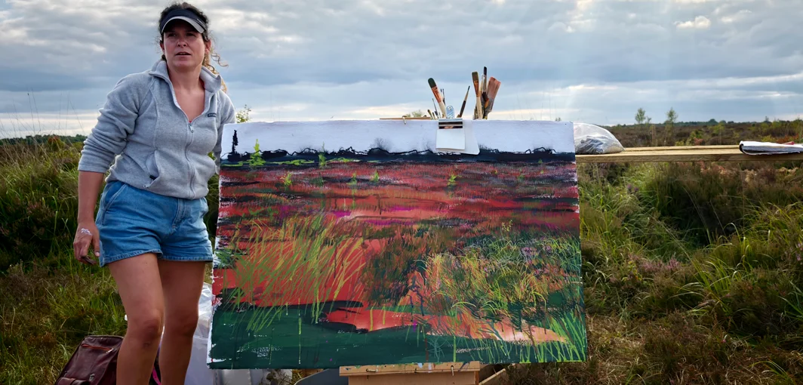
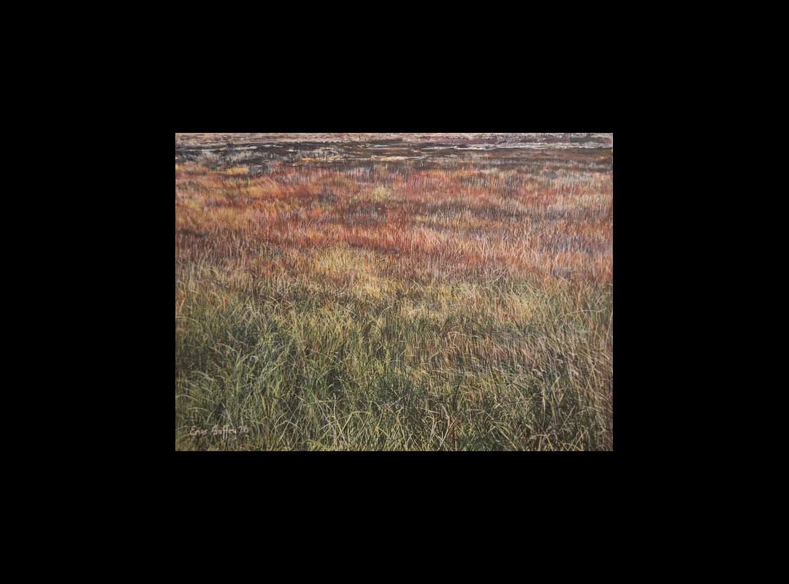
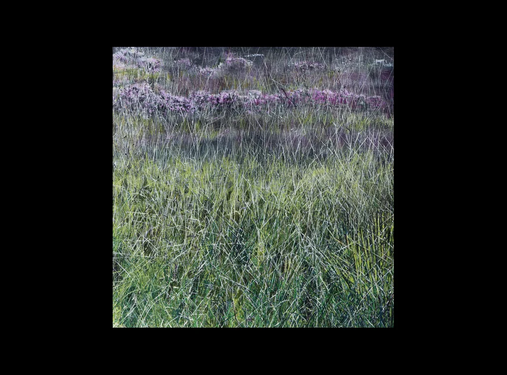
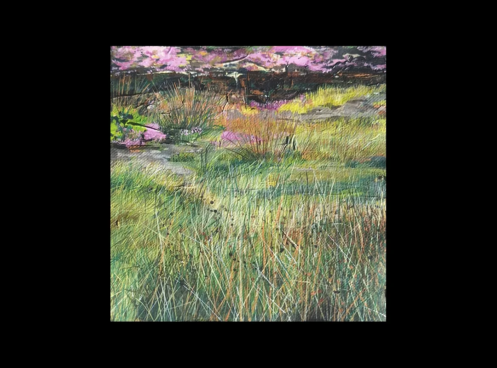

Emer Gaffey

Emer Gaffey is a visual artist based in Athlone, Co. Westmeath. Working across painting, drawing, printmaking and mixed-media processes, her practice explores the ecological and cultural landscapes of the Irish midlands. Through sustained observation, walking and field research, she investigates themes of place, memory, environmental change and biodiversity.
Recent work focuses on the transformation of peatland landscapes as former extraction sites transition towards ecological regeneration. Through studies of bog habitats, turf embankments and indicator species, her work examines the relationship between cultural heritage, ecological recovery and contemporary landscape experience. Growing up in a community where peat cutting formed part of everyday life, and with a father who worked for Bord na Móna, Gaffey brings a personal understanding of the bog as both a place of work and a place of belonging. Her work explores how these landscapes carry multiple histories simultaneously, where labour, livelihood, ecological change and cultural memory continue to shape one another.
Emer studied Fine Art Printmaking at the Limerick School of Art and Design and currently teaches art at Moate Community School, Co. Westmeath.
Móna


